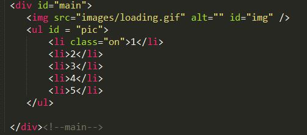
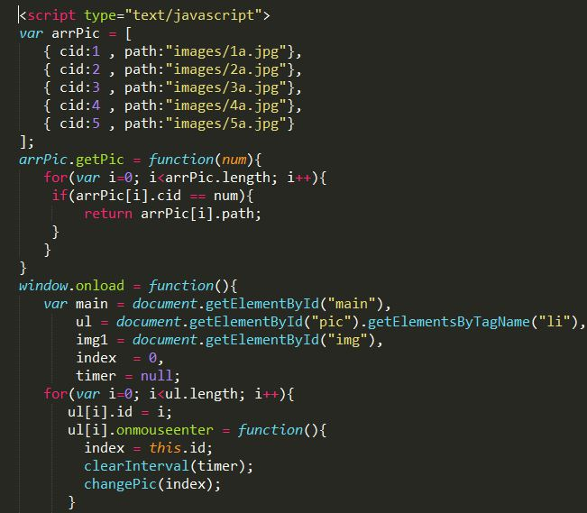
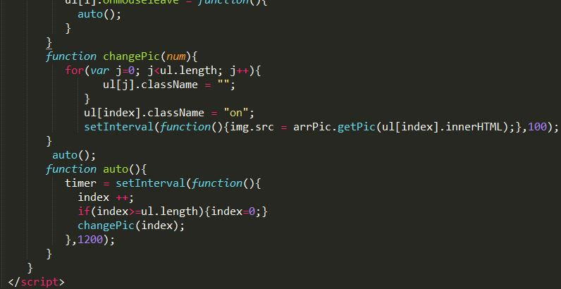
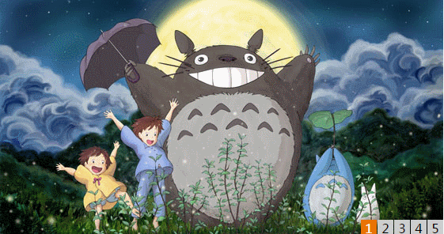

js图片轮播(自动)
- 发表于2017-10-28
- 分类于javascript篇
笔者最近刚建博客，不知道推送些什么记录一下生活。于是就想着把以前刚学js时做的一些基础案例拿出来充实博客。一是告诉自己学无止境，以后能否用更轻松的办法实现。二是警示自己踏实，一步一个脚印。
因为是刚开始学js的时候写的案例，故而有点简陋，希望不要嘲讽。
(1)这是html部分的代码。放置图片位置，looding图片用于刚开始图片缓冲时不至于界面不友好。

(2)以下两张是js代码


(3)以下是图片实现展示

PS：以下图片乱跳原因是笔者鼠标没录进去，是鼠标的移入事件触发的效果。
谢谢观赏！